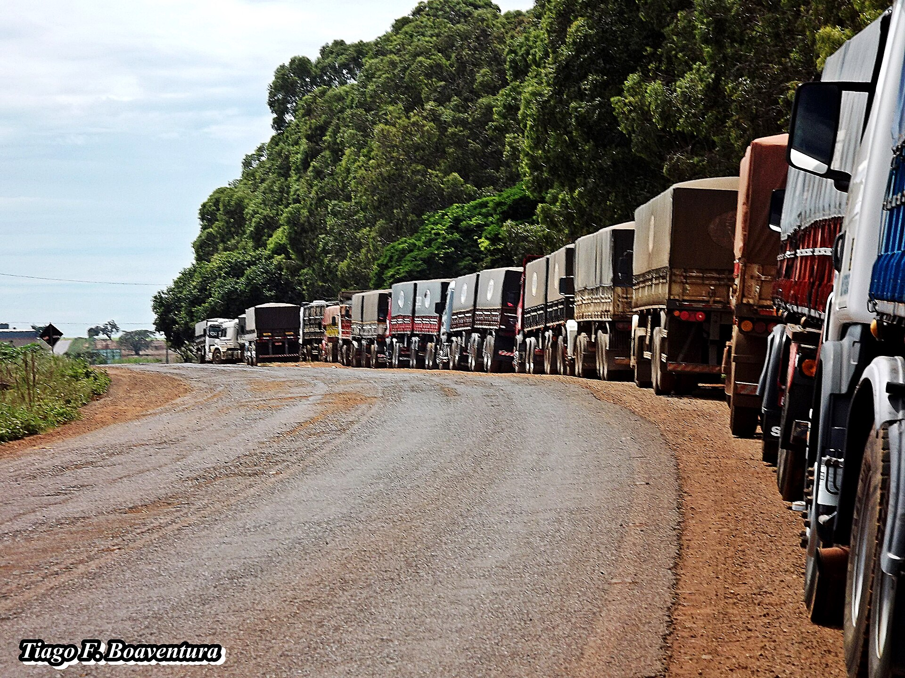
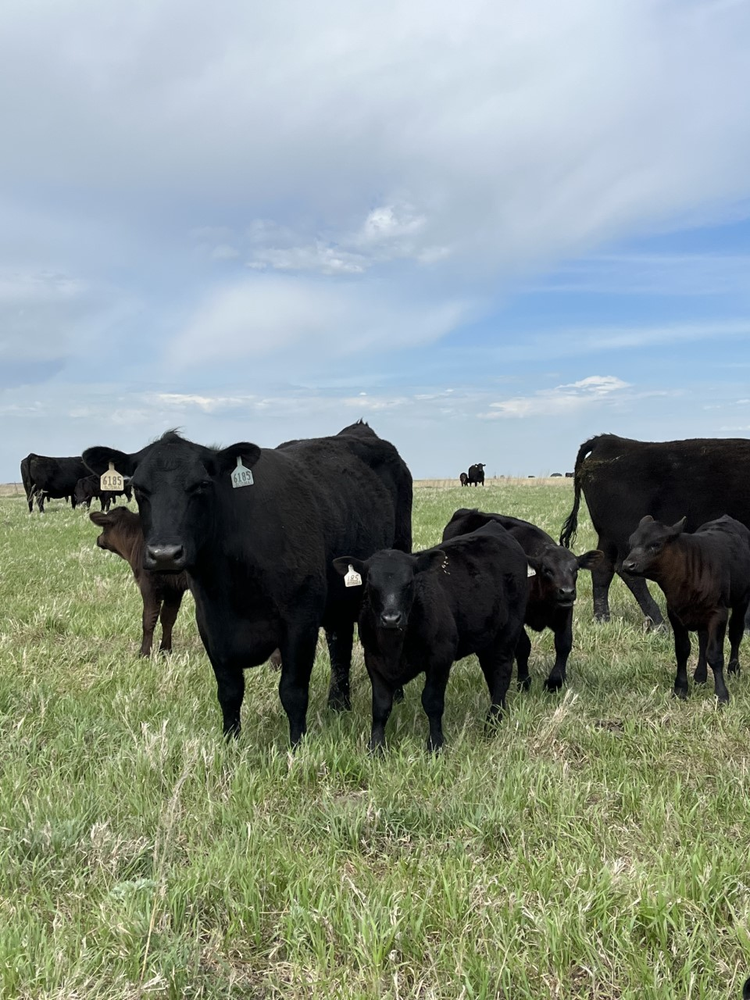
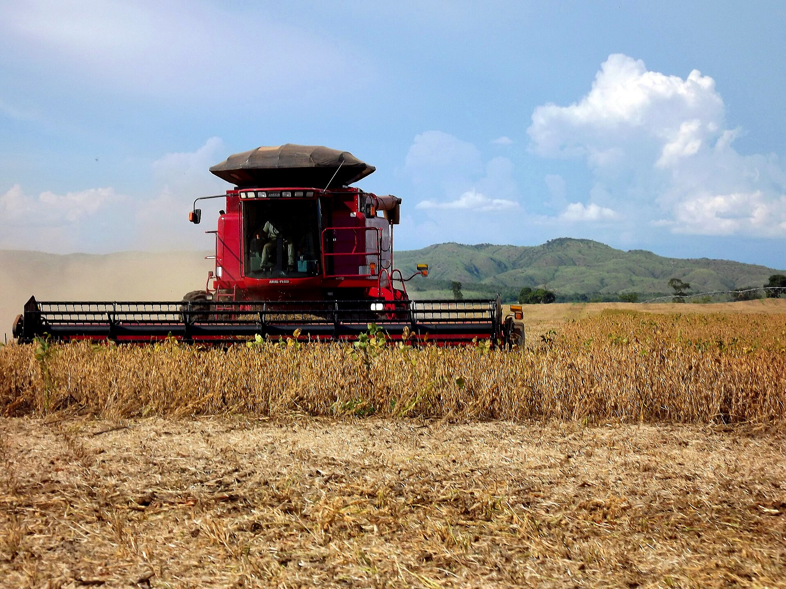
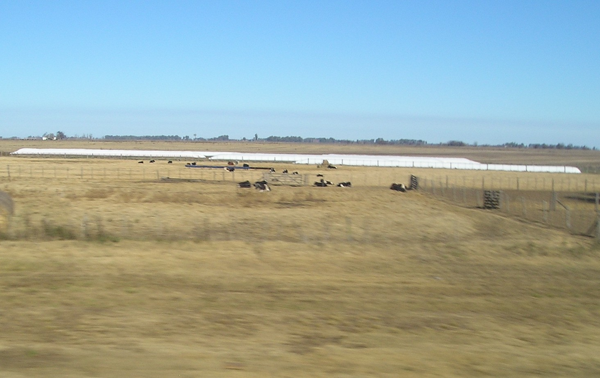
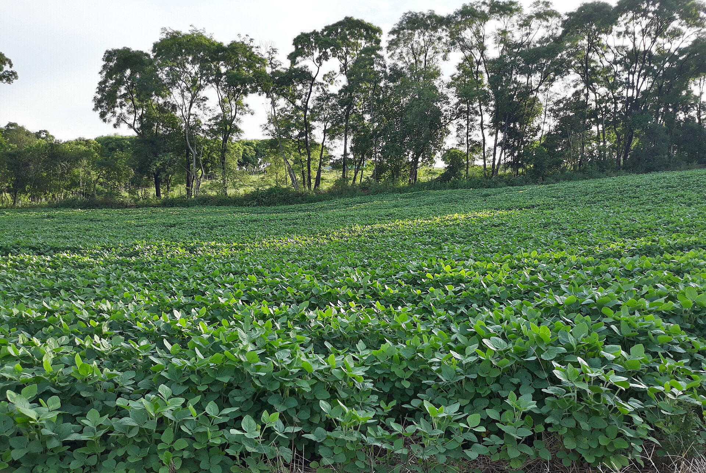

Receita: da bruta à líquida
Quanto entra de verdade com a venda?
Entre a cotação vista na TV e o dinheiro na conta há uma cadeia de descontos. Quem não a conhece superestima o próprio projeto.
Três respostas: como se calcula a receita bruta, o que a separa da líquida, e onde buscar o preço correto.
Três números multiplicados
Na pecuária, troque área por número de animais; no leite, litros/dia × dias × preço/litro. A estrutura é sempre a mesma: quantidade × preço.
Unidades consagradas: sacas para grãos, kg para carne, litros para leite.
Cada termo é uma premissa
- Área: a única já medida: os hectares do croqui da S2. Não é chute, é polígono.
- Produtividade: histórico da propriedade, média regional (CONAB, EMATER/RS) ou potencial do sistema. Sempre justificada.
- Preço: a premissa mais crítica e mais volátil. O resto da aula é sobre ela.
| Sistema | Premissas do exemplo |
|---|---|
| Grãos (soja) | 50 ha · 60 sc/ha · R$ 128/sc |
| Corte | 80 an. · 220 kg vivo · R$ 8,50/kg |
| Leite | 40 vacas · 22 L/dia · R$ 2,30/L |
Cotação não é preço na porteira
Entre a cotação nacional e o que o produtor gaúcho recebe, a receita encolhe:
- Frete: da propriedade à cooperativa ou armazém; quanto mais longe, menor o líquido.
- Umidade e impureza: soja acima de 14% de umidade sofre desconto por ponto percentual.
- Armazenagem: custo mensal por saca, se o produto espera preço melhor.
O preço que entra na planilha é o posto cooperativa, não o da TV.

Os descontos que a lei e o mercado cobram
- Funrural: 1,63% sobre a receita bruta da venda, retido no ato (produtor pessoa física).
- Taxas de comercialização: 1,0 a 2,0%: corretagem, taxa da cooperativa, classificação.
| Produtor | Alíquota | Sobre R$ 10.000 |
|---|---|---|
| Pessoa física | 1,63% | R$ 163 |
| Pessoa jurídica | 2,23% | R$ 223 |
É a líquida que paga as contas
Receita bruta
O valor cheio da venda. Boa para dimensionar a escala do projeto e comparar atividades.
Receita líquida
O que efetivamente entra no caixa. É contra ela que as margens do projeto serão calculadas.
Outras receitas da atividade
- Subprodutos: terneiro macho e vaca de descarte no leite; casca e farelo na agroindústria; esterco vendido.
- Excedentes: silagem ou feno vendidos a vizinhos; palha; serviços de máquina.
- Programas: venda institucional (PNAE, PAA) com preço diferenciado.
No leite, o descarte e os terneiros podem responder por 10 a 20% da receita, esquecê-los distorce o projeto inteiro.

Fontes de preço no RS
| Fonte | O que oferece |
|---|---|
| Cooperativa local | A mais direta: já desconta frete regional. Boletins semanais. |
| EMATER/RS | Boletins regionalizados: leite, grãos, carne, hortifruti. |
| CEPEA/ESALQ | Indicador nacional diário. Boa tendência; o preço gaúcho será menor. |
| CONAB | Histórico de preços, custos por estado, projeções de safra. |
| Sindicatos | Arrendamento, diárias rurais, insumos da região. |
O que é o indicador CEPEA
O CEPEA (ESALQ/USP) publica indicadores diários de preço: soja, milho, boi, leite, trigo. Para a soja, a referência é o porto de Paranaguá/PR: o preço da exportação, não o da sua cooperativa.
- Serve para enxergar tendência e momento de mercado.
- O preço no interior do RS fica abaixo: desconta o frete até o porto.
- O indicador do dia é consultado ao vivo, em aula.

O preço que importa é o relativo
Preço em reais sobe todo ano com a inflação. Quem revela poder de compra é o preço de um produto medido em outro produto: quantas sacas de soja compram uma tonelada de ureia.
Série NESPro/UFRGS, Camnpal e CONAB, valores reais (IPCA). Em aula: abrir a ferramenta e trocar produto e insumo ao vivo.
"Por que você usou esse preço?"
Essa pergunta virá na defesa do projeto. A resposta defensável tem três partes:
- Fonte: de onde veio o número (cooperativa, EMATER/RS, CEPEA).
- Data: quando foi consultado.
- Representatividade: por que vale para a safra planejada, no seu município.
"Ouvi de um vizinho" não atende a nenhum dos três critérios.
A lavoura não rende igual em toda parte
O mapa de produtividade do monitor de colheita mostra: a mesma lavoura tem zonas de manejo com rendimentos muito diferentes.
A média esconde essas diferenças; a soma por zona mostra onde a receita é maior e onde é menor.
Vender na colheita ou armazenar?
O preço tem sazonalidade: na colheita, a oferta concentrada derruba a cotação; na entressafra, ela tende a recuperar.
- Armazenar custa: taxa mensal por saca + o capital parado.
- E arrisca: o preço pode não subir o suficiente para pagar a espera.
A decisão depende do cálculo de cada caso.

50 hectares de soja
Lavoura de soja na região de Santa Maria, premissas declaradas:
- Área: 50 ha (medidos no croqui, como na S2).
- Produtividade: 60 sc/ha, compatível com o histórico regional.
- Preço: o que vamos pesquisar agora, com fonte e data.
Produção esperada: 3.000 sacas. Cada real por saca vale R$ 3.000 no projeto, por isso o preço merece cuidado.

Indicador × cooperativa
| Referência | Fonte · data | R$/sc |
|---|---|---|
| Indicador soja (porto Paranaguá) | CEPEA/ESALQ · 17 jul 2026 | 141 |
| Posto cooperativa, região de Santa Maria | cotação do dia (consultar em aula) | 128 |
A diferença (~R$ 13/sc) é o frete até o porto e as condições locais. O projeto usa o preço da cooperativa, com fonte e data anotadas.
Em aula: abrir cepea.esalq.usp.br e o boletim da cooperativa e atualizar os dois números.
A conta de cima
3.000 sacas na safra. Este é o teto: nenhum real além disso entra pela produção principal.
Se o preço do porto (R$ 141) fosse usado: R$ 423.000, uma receita R$ 39.000 maior do que a que se realiza de fato.
A cascata das deduções
Cerca de R$ 4 por saca somem entre a venda e o caixa, 3,1% da receita. É a RL, não a RB, que enfrenta os custos de produção.
O que a média esconde
| Zona de manejo | Área | sc/ha | Sacas |
|---|---|---|---|
| Alta produtividade | 15 ha | 66 | 990 |
| Média | 25 ha | 60 | 1.500 |
| Baixa (solo raso, compactação) | 10 ha | 48 | 480 |
| Total: média real 59,4 sc/ha | 50 ha | 2.970 |
A zona baixa entrega 12 sc/ha a menos: R$ 15.360/safra que o mapa localiza.

Três lições do caso
- Preço da cooperativa, não do porto: R$ 39.000 de diferença numa premissa.
- Dedução se calcula: R$ 12.000 saíram antes de qualquer custo de produção.
- Fonte e data anotadas: cada região tem uma fonte e data associada.
Tarefa de saída: parte 1
O simulador calcula RB e RL na hora, confiram se a cascata bate com a conta de vocês.
Tarefa de saída: parte 2
Cada grupo pesquisa agora, no celular, o preço do produto do seu projeto:
- Uma referência de indicador (CEPEA, CONAB).
- Uma referência local (cooperativa, EMATER/RS, agroindústria da região).
- Anotar fonte e data no campo de observações do passo 1.
Checklist de saída
- Preço pesquisado com fonte e data anotadas
- Produção principal lançada (quantidade × produtividade × preço)
- Outras receitas identificadas e lançadas
- Deduções aplicadas: RB → RL fechada no passo 1
Terminou antes? Comece a listar, no papel, tudo o que a atividade consome.
T3: Do manejo técnico ao custo
A linha de cima está pronta. Na próxima teórica começa a linha de baixo: traduzir o manejo em itens de custo, e classificá-los (fixo × variável, direto × indireto, metodologia Matsunaga/IEA).
- Revisar no site: Parte III, bloco 1 (seção receita) e Parte IV, bloco 3 (preço e fontes).
- Trazer para a T3: como a atividade do projeto é conduzida: práticas, insumos, máquinas.
Fontes e créditos
Referência bibliográfica geral: KAY, Ronald D.; EDWARDS, William M.; DUFFY, Patricia A. Gestão de propriedades rurais. 7. ed. Porto Alegre: AMGH, 2014. E-book. ISBN 9788580553963. Disponível em: Minha Biblioteca. Acesso em: 29 maio 2026. Dados, preços e taxas citados nos exemplos: fontes indicadas em aula e atualizadas a cada oferta.
Material didático elaborado pelo Prof. Róberson Macedo de Oliveira, Colégio Politécnico da UFSM, com apoio de inteligência artificial (Claude, Anthropic) na organização didática e diagramação. O conteúdo pedagógico, a metodologia e as decisões de planejamento são de responsabilidade do docente.
Material de estudo: Parte III.1: Receita · Parte IV.3: Preço e fontes · simulador de projetos · relação de troca: lavoura × pecuária · versão impressa deste material = apostila da aula (Ctrl+P).